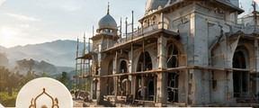

BERSAMA MEMBANGUN
TEMPAT KEBAIKAN
Dari Hati,
untuk Rumah Allah
Mari turut serta membangun masjid dan fasilitas umat di berbagai daerah. Setiap kontribusi Anda adalah bagian dari cahaya yang terus mengalir.
“Tempat di mana doa-doa tumbuh, dan harapan mengalir.”
120+Masjid
Telah Dibangun
Telah Dibangun
50.000+Penerima
Manfaat
Manfaat
15+Wilayah
Penyaluran
Penyaluran
TransparanLaporan
Berkala
Berkala
“
Barang siapa membangun masjid karena Allah, maka Allah akan membangunkan baginya rumah di surga.HR. Bukhari & Muslim
PROGRAM UTAMA
Jalan Kebaikan
yang Terus Mengalir
Berbagai program untuk mendukung pembangunan masjid, pendidikan, dan kesejahteraan umat.
Lihat Semua Program →KATALOG PEMBANGUNAN
Setiap Masjid,
Sebuah Harapan Baru.
Jelajahi pilihan program pembangunan masjid dan ikut ambil bagian dalam menghadirkan ruang ibadah yang nyaman bagi masyarakat.
Mulai Berkontribusi ↗BERSAMA MENEBAR MANFAAT
Kebaikan Besar Dimulai
dari Langkah Kecil.
Ini adalah simulasi tampilan website. Tombol di bawah akan membuka contoh formulir, tanpa transaksi sungguhan.
Menjembatani niat baik dengan manfaat yang terus bertumbuh. Kenali yayasan →